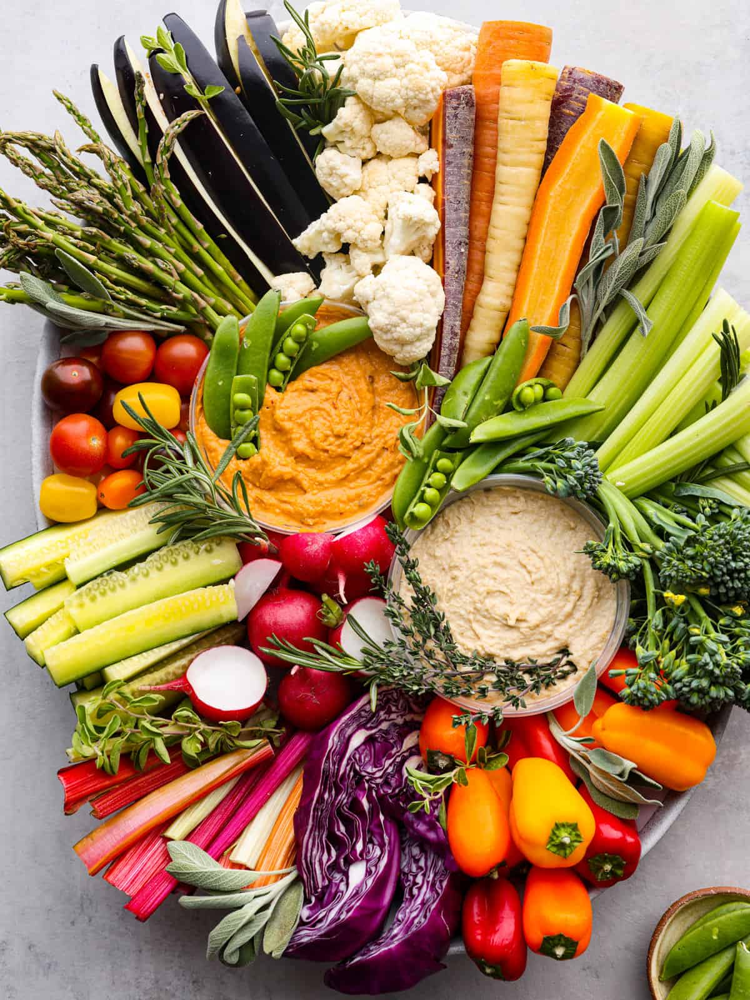

Simple and elegant, crudités are traditional French appetizers consisting of raw vegetables which can be sliced or left intact. The vegetables typically used for crudités include carrots, celery, bell peppers, cucumbers, asparagus spears, broccoli, and cauliflower.
Meal prep time : 15 minutes
Servings : 20